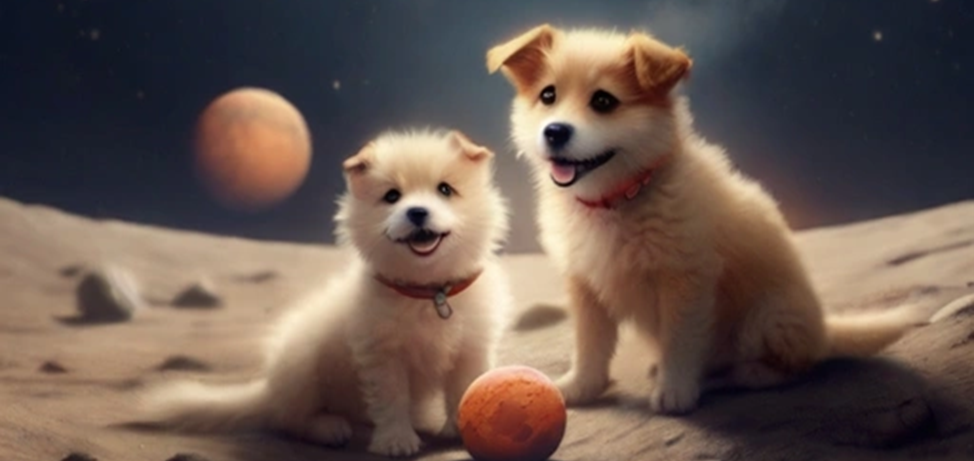
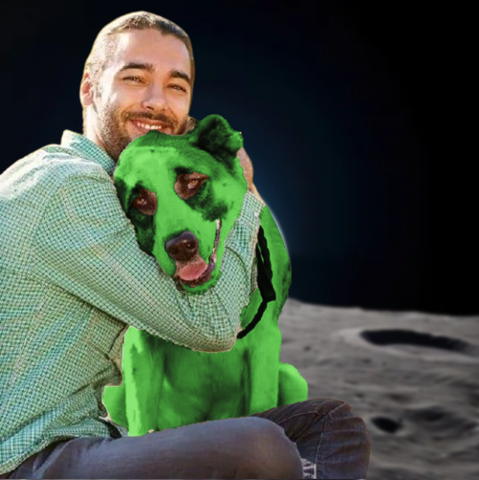
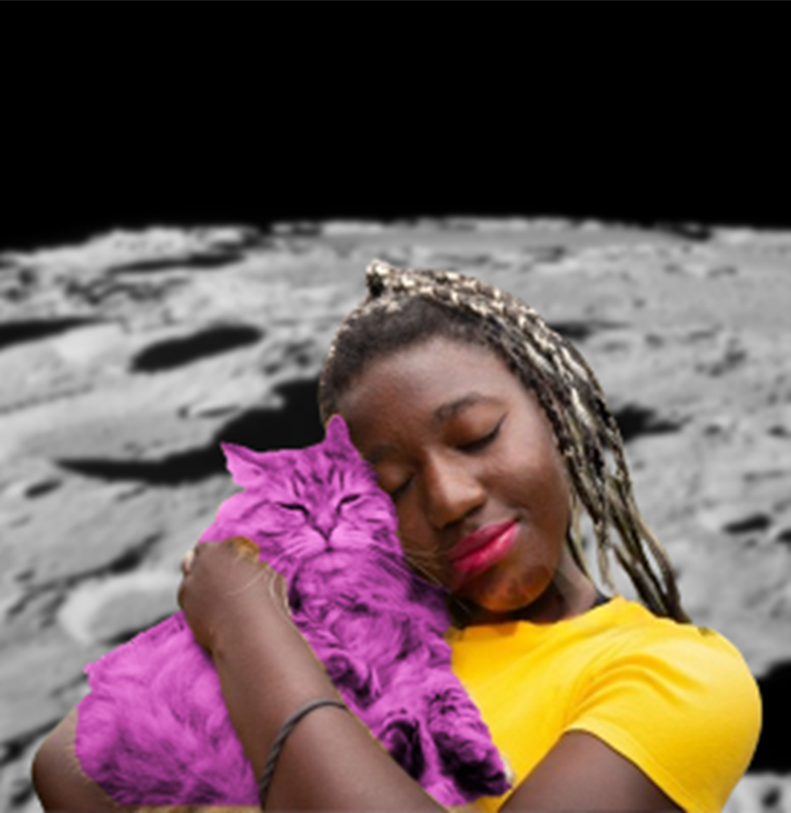
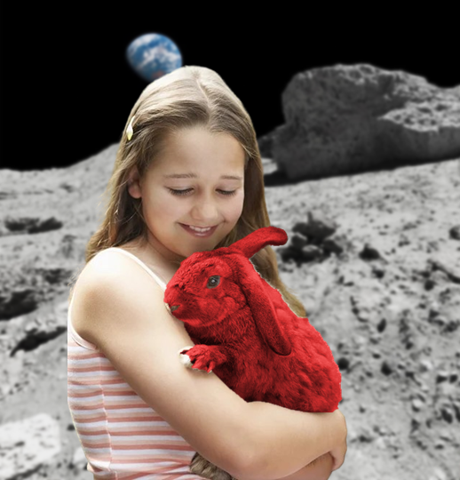

Adote para além da sua rua, e tenha seu novo amiguinho diretamente da lua.
POR QUE ADOTAR UM PET LUNAR?
Imagine viver com uma criatura de outro mundo. A experiência é única e estimulante, expandindo os horizontes da sua compreensão sobre vida no universo.

Muitas dessas criaturas possuem habilidades extraordinárias. Essas habilidades podem ser úteis em varias situações, tornando-os companheiros excepcionais.
Através do vinculo de pet-dono e o cuidado mútuo, você consegue construir pontes de entre as fronteiras galácticas, se juntando em uma comunidade cósmica.

ANIMOONS
Animam a sua vida, te levam para o alto.
QUEM JÁ ADOTOU


Gabriel e Luke
"Sentindo um turbilhão de emoções, e gratidão por essa nova jornada juntos e um amor que sei que durará para sempre."
Londres, Inglaterra.

Linda e Alfred
"Adotar meu gato por aqui foi a melhor decisão da minha vida. Ele trouxe muita alegria para minha casa e meu coração."
Toronto, Canadá.

Augusta e Joaninha
"Que alegria ter meu novo pet! Agora tenho uma amiga fofa para brincar e cuidar todos os dias, meu coração está cheio de amor."